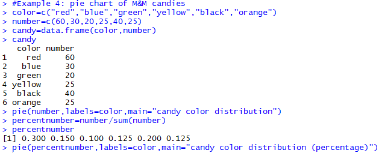
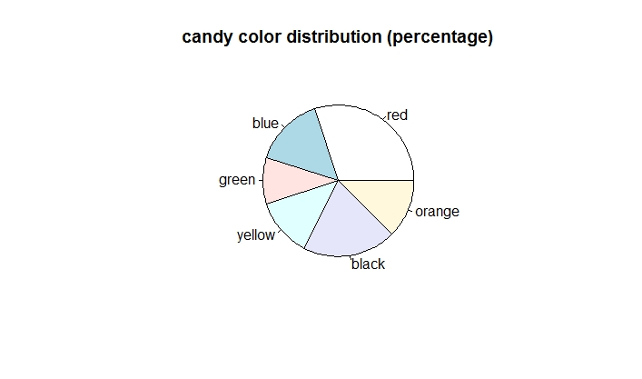
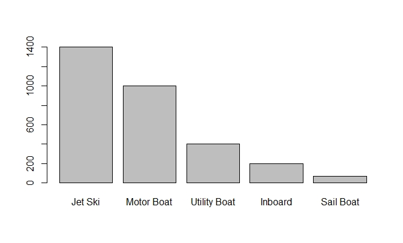
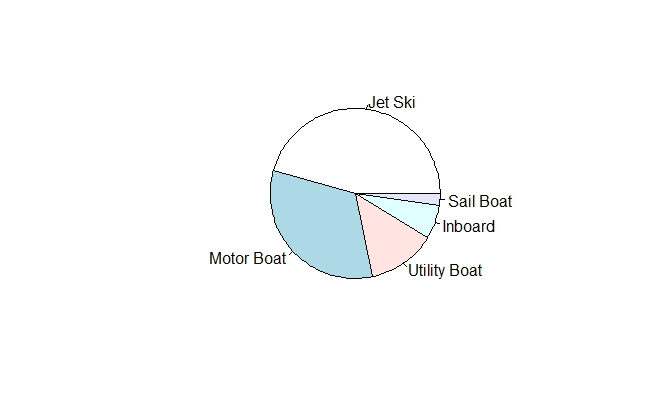

Construct Pie Charts
Introduction
Pie chart is used to show the proportions (or counts) of categories. A pie chart is a very common graph that depicts quantitative data as slices of a circle, in which the size of each slice is proportional to the frequency count for the category. Although pie charts are common, they are not very effective.
Knowledge
The R function is
pie(x, labels=names(x), clockwise=FALSE, density=NULL, angle=45, main=NULL, col=variable)
The arguments are:
x: a vector of non-negative numerical quantities. The values in x are displayed as the areas of pie slices
labels: one or more expressions or character strings giving names for the slices.
clockwise: logical indicating if slices are drawn clockwise or counter clockwise; FALSE is the default setting
density: the density of shading lines, in lines per inch. The default value of NULL means that no shading lines are drawn.
angel: the slope of shading lines, given as an angle in degrees.
main: title of the graph
col: color; if col=names(x), then the color of the pie matches the legend
Key Points to Remember
A pie chart displays the frequency or relative frequency of each category of a qualitative variable. The R function is pie(). A pie chart is not very visually effective in showing the difference between categories, and is not recommended.
Practice and Reflection
Practice
Example 4: A bag of M&M candies has six color: red, blue, green, yellow, black, and orange. In a sample of 200 candies in a bag, there are 60 red, 30 blue, 20 green, 25 yellow, 40 black and 25 orange. Make a pie chart to show the number of each color. Make another pie chart to show the percentage of each color. The R code is

The pie chart is shown in figure 6 below

Figure 6.a. Pie chart to show the distribution of the six color

Figure 6.b. Pie chart to show the distribution of the six color in percentage
Normally, a bar chart shows the data more effectively than a pie chart with a more accurate scale. For example, the data below shows the number of stolen boats in a recent year. Let us compare the bar chart and pie chart reprinting the same data (Triola, 2018)
| Boat type | Number stolen |
|---|---|
| Jet Ski | 1400 |
| Motor Boat | 1000 |
| Utility Boat | 400 |
| Inboard | 200 |
| Sail Boat | 70 |
A bar chart is shown in figure 7.a, and a pie chart is shown in figure 7.b.

Figure 7.a. Bar chart of boat stolen data Figure 7.b. Pie chart of boat stolen data
From figure 7, a bar chart does a better job of showing the relative sizes of different types of boat stolen and the trend. A bar chart effectively shows the difference among categories with only one color, while the differences among the utility boat, in board, and sail boat are not very easy to tell from a pie chart.
Reflection
Activity 4: A survey was conducted to study the political affiliation distribution. Among the 300 people surveyed, 101 of them are Republicans, 129 are Democrats, and 70 are others. Generate a pie chart to show the political affiliation distribution.
Assessment
Using the following data set of paint color shown in a painting competition to generate a pie chart showing the frequencies of each color. Title the graph. Match the legend with the color.
| blue | black | red | red | grey | red | blue | green | black | black | red | red | black |